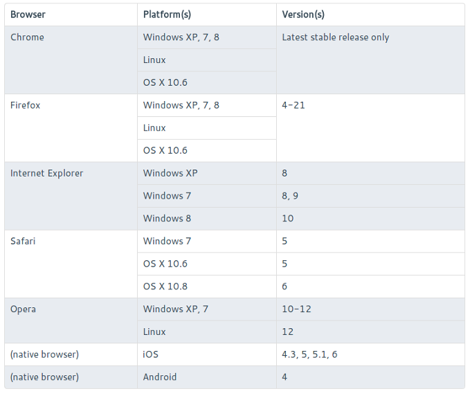

Testing a JavaScript API in 50 Browsers with Sauce Labs
Well, 50-ish, I didn't count
Probably at least 30. It's a lot, anyway. Or a fair number. I guess
it depends on your perspective. But that's all beside the point. I
just picked 50 cause it's nice number.
Dave Rolsky
MaxMind
MaxMind GeoIP2 JS API

The Challenge
-
We say we support those browsers, but how do we know?
-
With tests, of course.
The Tests
deepEqual(
response,
expect,
"GeoIP2 Country response as seen by success callback"
);
equal(
request.urlParts.protocol,
"https",
"request protocol is https for modern browsers"
);
Next Problem
- QUnit reports results in the browser
- I want these tests to run without a human
- ... and I need to report the results back to Jenkins
- ... and I need to run them in 50 (40? 30?) browsers
A Veritable Plethora of Browsers
- Sauce Labs provides a "browser in a VM" service
- Request a browser with the Selenium JSON Wire Protocol
- Do stuff in the browser
Reporting Back to Jenkins
- Capture results from QUnit
document.results = {
assertions: [],
done: false
};
/* Called after each assertion (equal, deepEqual, etc.) */
QUnit.log(
function(result) {
document.results.assertions.push(result);
}
);
/* Called after all the tests have run */
QUnit.done(
function(results) {
document.results.done = true;
}
);
Reporting Back to Jenkins
- Use
Selenium::Remote::Driver to ask the browser
$results = $driver->execute_script('return document.results');
Reporting Back to Jenkins
for my $test ( @{ $results->{assertions} // [] } ) {
if ( $test->{fail} ) { ... }
elsif ( $test->{skip} ) { ... }
my $desc = $self->_test_description(...);
if ( ref $test->{expect} ) {
is_deeply( $test->{actual}, $test->{expect}, $desc );
}
elsif ( $test->{expect} ) {
is( $test->{actual}, $test->{expect}, $desc );
}
else {
ok( $test->{result}, $desc );
}
}
Things I'm Glossing Over
- Handling failure to start a browser
- Handling the browser tests stopping all JS execution
- Handling error responses from Sauce Labs
- Basically all the hard parts
Run the Tests in Parallel
- Our Sauce Labs subscription plan allows 4 parallel browsers
- I love
Parallel::ForkManager
my $pm = Parallel::ForkManager->new(4);
for my $browser (@browsers) {
$pm->start() and next;
diag( $self->_browser_summary($browser) );
my $results = $self->_results_for_browser($browser);
$pm->finish( 0, { results => $results, browser => $browser } );
}
Collect the Results in the Parent
$pm->run_on_finish(
sub {
my ( undef, undef, undef, undef, undef, $message ) = @_;
if ( $message->{results} ) {
$self->_run_results_as_tests(
$message->{results},
$message->{browser},
);
}
else { # handle weird failure }
}
);
Weird ShStuff Happens
- Get the results from the browser
- The
QUnit.done event was handled
- Only have results for 5 tests instead of 41
- Tests run fine if done manually
- What ... the ... fork?
Anyone Know What the FuHeck is Happening?
- Please come tell me what i'm doing wrong
Summary
- Test your JS
- Test it in multiple browsers
- Never do anything by hand that you can automate
Thank You